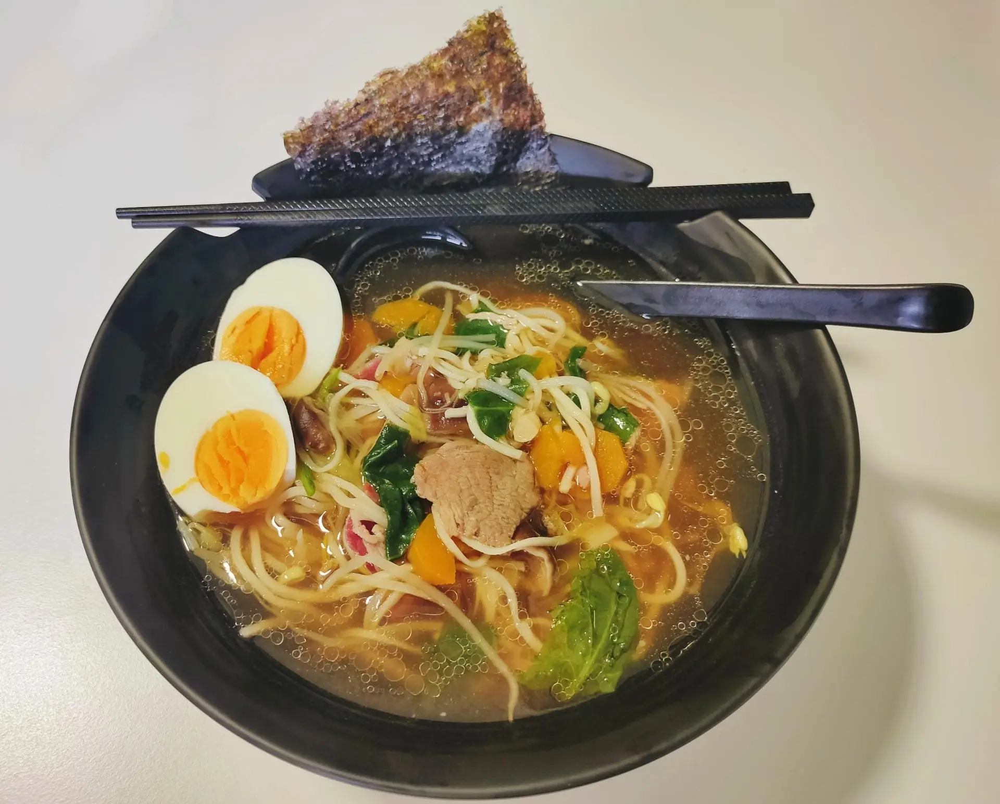

Home
Receta: Ramén de ternera

Bol de ramen con ternera
Incluso el mejor ramen instantáneo, no tendrá el mismo sabor que si lo elaboramos en casa.
Para poder disfrutar de la receta original, te contamos cómo hacer ramen y
los ingredientes necesarios para elaborar cada tipo de ramen.
La receta de ramen es sencilla de elaborar, tan sólo tendremos que tener en cuenta los tiempos de elaboración.
En su preparación, tardaremos media hora así como en la cocción de la sopa de ramen.
Antes de disfrutar de este plato, aconsejamos un reposo de 2 horas.
Ingredientes
- 300g de fideos para ramen
- Cebollino
- Alga nori
- Brotes de espinaca
- Jenjibre fresco
Ingredientes para la sopa de ramen
- 1 carcasa de pollo
- 300g de panceta de cerdo
- 1 cebolla
- 2 puerros
- 2 zanahorias
- 3 dientes de ajo
- 4 setas shiitake
Ingredientes para los huevos marinados
- 25g de azúcar moreno
- 60ml de mirin (similar al sake, pero con menos alcohol y más dulce)
- 1 diente de ajo
Paso a paso
- Para preparar ramen japonés, lo primero que haremos será atar panceta con hilo,
de forma que la piel quede por fuera y se junten ambos extremos del corte.
Calentaremos aceite en una olla exprés y marcamos la panceta de cerdo. Retiramos una vez
esté dorada y en esa misma olla, introducimos la cebolla, los puerros y las zanahorias,
previamente peladas y lavadas. Lavaremos también las setas y las cortaremos en rodajas
antes de echarlas a la olla junto a las verduras. Añadiremos también 3 rodajas de jenjibre,
la panceta y el cascarón del pollo.
- Para hacer la sopa de ramen, añadiremos agua y llevaremos la olla a ebullición.
Pasados unos 15 minutos, apagaremos el fuego y dejamos que baje la presión de la
olla. Una vez pasado ese tiempo, abrimos y reservamos la panceta y las setas,
mientras colamos el caldo para la sopa de ramen. Para que el ramen chino quede
perfecto, nos aseguraremos de desgrasar para que quede ligero.
Apartamos y comenzamos a preparar los huevos marinados,
que coceremos durante unos seis minutos.Cuando estén listos, los pelaremos y
echaremos en el mirin con azúcar, mientras se calienta.
Introducimos también la panceta y dejamos maridar un par de horas.
-
Por último cocemos los fideos y mientras, cortaremos el hilo de la panceta y
cortamos en finas lonchas. Haremos lo mismo con los huevos.
Para emplatar, podemos laminar también las setas y picar un poco de cebollino.
Antes de servir, calentaremos el caldo para que esté a temperatura cuando vayamos
a comer. En cada cuenco, añadiremos una ración de fideos, dos mitades de huevo y
un poco de panceta, acompañado de las setas, unas pocas espinacas y el alga nori.
Como toque final, podemos añadir unas semillas de sésamo negro.
Home